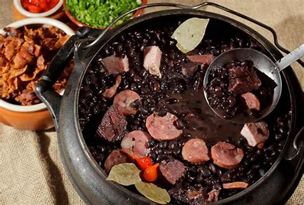
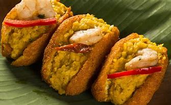
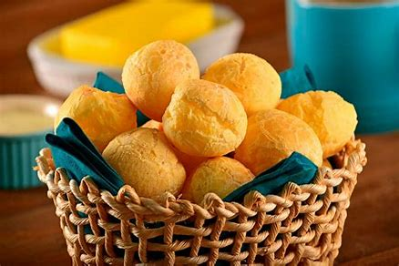

La feijoada es el plato más emblemático de Brasil. Se trata de un guiso a base de frijoles negros, carne de cerdo y carne de res, acompañado de arroz, ensalada y rodajas de naranja.
El acarajé es una especie de bollo frito de frijoles, muy común en el estado de Bahía. Se sirve con camarones, cebolla, pimientos y otros condimentos.
El pão de queijo es un panecillo de queso tradicionalmente originario de Minas Gerais. Es pequeño, esponjoso y muy sabroso, hecho con harina de tapioca.
El brigadeiro es un dulce tradicional en Brasil hecho con leche condensada, cacao y mantequilla. Se sirve generalmente en fiestas y celebraciones.